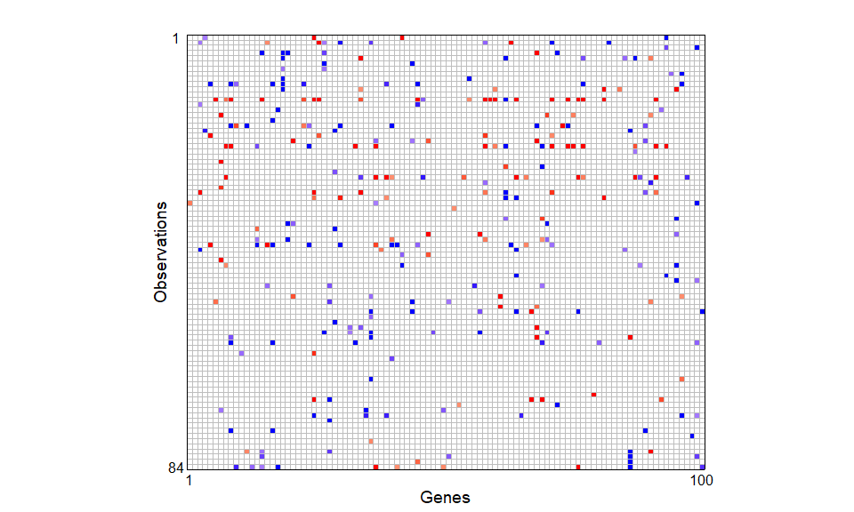

Bone mineral density data
realdata.RmdTo illustrate the use of CR-Lasso, we consider the bone mineral density (BMD) data from Reppe et al. (2010). The data are publicly available in the European Bioinformatics Institute Array-Express repository. The BMD data consists of gene expression measurements of 54,675 probes of 84 Norwegian women.
Microarray measurements are often contaminated (noisy), as Rocke & Durbin (2001) highlighted. This contamination can stem from multiple sources, thereby obscuring the gene expression in the data (Zakharkin et al., 2005).
Importing the data
Direct links to the data files:
## array expression data
expressiondat = readr::read_tsv("Normarrayexpressdata.txt.magetab") |>
t() |>
data.frame() |>
janitor::row_to_names(row_number = 1) |>
tibble::rownames_to_column(var = "id") |>
dplyr::mutate(id = readr::parse_number(id)) |>
janitor::clean_names() |>
dplyr::select(-composite_element_ref) |>
mutate(across(.cols = -1, .fns = as.numeric)) |>
mutate(across(.cols = -1, .fns = log))
# feature data
featuredat = readr::read_tsv("E-MEXP-1618.sdrf.txt") |>
janitor::clean_names() |>
dplyr::mutate(id = readr::parse_number(source_name)) |>
dplyr::select(id,
hip_t = characteristics_total_hip_t_score) |>
arrange(id) # sort obs by patient ID
# merged data
datall = dplyr::left_join(featuredat, expressiondat,
by = "id")
write_rds(datall, file = "datall.rds", compress = "gz")Feature screening
Given the large number of variables in the dataset, a pre-screening step was implemented to identify the subset of variables that are most correlated with the outcome of interest, the total hip T-score. To accomplish this, we first log-transformed all the predictors and then utilized the robust correlation estimate based on Winsorization as in Khan et al. (2007), instead of the Pearson correlation, since Winsorization is more robust to outliers that may occur in the dataset. The screened data comprise measurements of \(p = 100\) genes from \(n = 84\) Norwegian women.
datall = readr::read_rds("datall.rds")
x = datall |> dplyr::select(-id, -hip_t) |> as.matrix()
y = datall |> dplyr::select(hip_t) |> pull()
# Huber correlation
corh = apply(x, 2,
FUN = function(xvec){robustHD::corHuber(xvec, y)})
orders = order(abs(corh), decreasing = TRUE)
xscreen = (x[,orders])[,1:100]
# pairs(cbind(y,xscreen[,1:5]))
datascreen = cbind(y, xscreen)
rownames(datascreen) = datall$id
readr::write_rds(datascreen, file = "datascreen.rds")The screened data, datascreen, is included in the regcell package.
The plot below shows the outlier cell map for 100 screened variables on 84 Norwegian women using the DDC method Rousseeuw & Van Den Bossche (2018). Cells are flagged as outlying if the observed and predicted values differ too much. Most cells are blank, showing they are not detected as outliers. A red cell means the observed value is significantly higher than the predicted value, and a blue cell means the observed value is significantly lower.
data(datascreen, package = "regcell")
x = datascreen[,-1]
fit1 <- cellWise::DDC(x)
#>
#> The input data has 84 rows and 100 columns.
regcell::newcellmap(
fit1$stdResid,
columnlabels = c(1,rep(" ",dim(x)[2]-2),dim(x)[2]),
rowlabels = c(1,rep(" ",dim(x)[1]-2),dim(x)[1]),
columnangle = 0,
colContrast = 1,
rowtitle = "Observations", columntitle = "Genes",
sizetitles = 2,
adjustrowlabels = 0.5,
adjustcolumnlabels = 0.5)+
theme(axis.text.x = element_text(size = 12),
axis.text.y = element_text(size = 12),
axis.title.x = element_text(size = 14),
axis.title.y = element_text(size = 14),
legend.title = element_text(size=14), #change legend title font size
legend.text = element_text(size=12)) 
Figure 1: Outlier cell map for 100 screened variables on 84 Norwegian women. Cells are flagged as outlying if the observed and predicted values differ too much. Most cells are blank, showing they are not detected as outliers. A red cell means the observed value is significantly higher than the predicted value, and a blue cell means the observed value is significantly lower.
# Overall average contamination rate
mean((x - fit1$Ximp)!=0)
#> [1] 0.03607143
# Column average
max(colMeans((x - fit1$Ximp)!=0))
#> [1] 0.0952381
which.max(colMeans((x - fit1$Ximp)!=0))
#> 236831_at
#> 36
# Row average
max(rowMeans((x - fit1$Ximp)!=0))
#> [1] 0.22
which.max(rowMeans((x - fit1$Ximp)!=0))
#> [1] 13On average, the screened genes exhibit an overall contamination rate of 3.6%, with probe 36831_at having the highest contamination rate of 9.5%. Among the observations, row 13 in Figure 1, with patient ID , shows the highest contamination rate at 22%.
Given the cellwise contamination, we first standardized all variables with the median and \(Q_n\). We then conducted a simple simulation study to validate the effectiveness of CR-Lasso, Lasso, MM-Lasso, RLars, SLTS and SSS on the bone mineral density data.
Method comparison
To perform the method comparison considered in the paper, you will need some additional packages. For ease of replication we have created a shootings package. The functions in this package were taken from https://github.com/ineswilms/sparse-shooting-S and compiled into a basic package to make them more convenient to use:
remotes::install_github("PengSU517/shootings")Another package you may want to use is the mmlasso package. The original code was from https://github.com/esmucler/mmlasso.
An adapted version of this package is available from https://github.com/PengSU517/mmlasso, as we found some components no longer functioning as intended.
You can install this package conveniently using :
remotes::install_github("PengSU517/mmlasso")
# remotes::install_github("PengSU517/mmlasso")
library(mmlasso)
# remotes::install_github("PengSU517/shootings")
library(shootings)
library(gt)
##### methods compared
mtds = list(
## spase shooting S, codes are from https://github.com/ineswilms/sparse-shooting-S
## package is available from https://github.com/PengSU517/shootings
## install this package directly using remotes::install_github("PengSU517/shootings")
sss = function(y, x){shootings::sparseshooting(x,y)$coef},
## Rlars, from package robustHD
rlars = function(y, x){regcell::Rlars(y, x)$betahat},
## MM-Lasso, forked from https://github.com/esmucler/mmlasso
## the updated package is available from https://github.com/PengSU517/mmlasso
## install this package directly using remotes::install_github("PengSU517/mmlasso")
## the pense package on CRAN would be an alternative here
mmlasso = function(y,x){mmlasso::mmlasso(x,y)$coef.MMLasso.ad},
## sparse LTS, from package robustHD
slts = function(y,x){robustHD::sparseLTS(x,y)$coefficients},
## cellwise regularized Lasso without post regression, not used in simulations
# cell_lasso = function(y,x){
# fit = regcell::sregcell_std(y = y, x = x, softbeta = TRUE, lambda_zeta = 1, penal = 1, penaldelta =0)
# return(c(fit$intercept_hat, fit$betahat))
# },
## cellwise regularized Lasso with post regression
cell_lasso_post = function(y,x){
fit = regcell::sregcell_std(y = y, x = x, softbeta = TRUE, lambda_zeta = 1, penal = 1, penaldelta =0)
return(c(fit$intercept_hat_post, fit$betahat_post))
},
## Lasso, from package glmnet
lasso = function(y,x){
return(regcell::lassocv(y,x)$betahat)
}
)Artifically generated response
We first obtained a clean (imputed) dataset \(\mathbf{\check X}\) using DDC (Rousseeuw & Van Den Bossche, 2018). We then generated an artificial response \(\mathbf{y} = \mathbf{\check X}\mathbf{\beta} + \mathbf{\varepsilon}\) using screened clean predictors and \(\mathbf{\varepsilon} \sim N(\mathbf{0},0.5^2\mathbf{I})\). We randomly picked ten active predictors in each simulation run and set \(\beta_j \sim U(1, 1.5)\) for each of them. We then randomly collected 80% observations from the original (contaminated) dataset for model training, while the remaining 20% of the imputed (clean) dataset was used to assess the prediction accuracy. We repeated the simulation procedure 200 times.
library(doParallel)
registerDoParallel(cores=10)
getDoParWorkers()
data(datascreen, package = "regcell")
x = s as.matrix(robustHD::robStandardize(datascreen[,-1])[,1:100])
ximp = cellWise::DDC(x)$Ximp
result <- foreach(mtd = 1:length(mtds),
.packages = c("robustHD", "robustbase" , "mmlasso",
"shootings", "cellWise", "regcell"))%:%
foreach(pr = c(5,10))%:%
foreach(sigma = c(0.5, 1))%:%
foreach(m = 1:5) %dopar% { # was 200
set.seed(m)
error = rnorm(84, sd = sigma)
beta = sample(c(runif(pr, 1, 1.5),rep(0,100-pr)))
y = ximp%*%beta + error
obs = sample(1:84, 17, replace = FALSE)
ytrain = y[-obs]
xtrain = x[-obs,]
ytest = y[obs]
xtest = ximp[obs,]
betahat = mtds[[mtd]](ytrain,xtrain)
tpf<-function(betahat, beta){sum((as.logical(betahat)==as.logical(beta))[which(beta!=0)])}
tnf<-function(betahat,beta){sum((as.logical(betahat)==as.logical(beta))[which(beta==0)])}
tp = tpf(betahat[-1], beta)
tn = tnf(betahat[-1], beta)
res = ytest - betahat[1] - xtest%*%betahat[-1]
mape = mean(abs(res))
rmspe = sqrt(mean(res^2))
rst = list(m = m, mtd = names(mtds)[mtd], pr = pr, sigma = sigma,
tp = tp, tn = tn, rmspe = rmspe, mape = mape)
rst
}
result_realdata_artificial = result
saveRDS(result_realdata_artificial, file = "result_realdata_artificial.rds")For each method, we show MAPE (mean absolute prediction error) and RMSPE values, as well as their True positive numbers (TP), true negative numbers (TN) and F\(_1\) scores.
result = readr::read_rds("result_realdata_artificial.rds")
# 1. 加载你之前保存的数据 (假设你还没重新跑，里面依然是 .RData 格式)
# 2. 剥开 3 层外衣，把 4层嵌套列表 变成 1层列表（里面包含 120 个只含 8 个变量的单层列表）
flat_list <- unlist(unlist(unlist(result, recursive = FALSE), recursive = FALSE), recursive = FALSE)
# 3. 将其按行合并为标准的数据框 (这一步会自动对齐列名: m, mtd, pr, sigma, tp, tn, rmspe, mape)
df <- bind_rows(flat_list)
# 4. 执行你的清洗管道 (建议把 c(3:8) 改为具体的列名更安全)
final_result <- df |>
mutate(method = recode(mtd,
cell_lasso_post = "CR-Lasso",
sss = "SSS",
rlars = "RLars",
mmlasso = "MM-Lasso",
slts = "SLTS",
lasso = "Lasso")) |>
mutate(method = factor(method, levels = c("CR-Lasso", "SSS", "RLars", "MM-Lasso", "SLTS", "Lasso"))) |>
mutate(across(c(pr, sigma, tp, tn, rmspe, mape), as.numeric), # 用列名代替下标更稳妥
TP = tp,
TN = tn,
FP = 100 - pr - TN,
FN = pr - TP,
BACC = (TP/pr + TN/(100-pr))/2,
F1 = 2*TP/(2*TP + FP + FN),
RMSPE = rmspe,
MAPE = mape) |>
select(method, RMSPE, MAPE, TP, TN, F1)
# 查看最终结果
head(final_result)
summ = final_result %>% group_by(method) %>% summarise(
RMSPE = round(mean(RMSPE, na.rm = T),2),
MAPE = round(mean(MAPE, na.rm = T),2),
TP = round(mean(TP, na.rm = T),2),
TN = round(mean(TN, na.rm = T),2),
F1 = round(mean(F1),2))
# xtable::xtable(t(summ)) ## this is the table we showed in the manuscript
gt::gt(summ)Leave-one-out Cross-Validation
To demonstrate the performance on the real data, a sparse regression model was fitted separately with the original response (the total hip T-score) via the aforementioned methods. Out of the 100 pre-screened genes, nine genes were commonly chosen by CR-Lasso, Lasso, MM-Lasso, RLars, and SLTS. We ran the Leave-One-Out Cross-Validation to assess the performance of the selected models.
data(datascreen)
y = datascreen[,1]
x = as.matrix(robustHD::robStandardize(datascreen[,-1]))
result <- foreach(mtd = 1:length(mtds),
.packages = c("robustHD", "robustbase" , "mmlasso",
"shootings", "cellWise", "regcell"))%:%
foreach(p = c(100))%:%
foreach(obs = 1:84)%dopar%{
set.seed(1)
x = x[,1:p]
ytrain = y[-obs]
xtrain = as.matrix(x[-obs,])
ytest = y[obs]
xtest = x[obs,]
betahat = mtds[[mtd]](ytrain,xtrain)
res = ytest - betahat[1] - sum(xtest*betahat[-1])
rst = c(mtd = names(mtds)[mtd], n = obs, p = p, res = res)
rst
}
result_realdata = result
saveRDS(result_realdata, file = "result_realdata.rds")The RMSPE and MAPE from Leave-one-out prediction residuals are also shown in table.
result = result_realdata |> ## readr::read_rds("result_realdata.rds") |>
data.frame() |>
t() |>
data.frame() |>
mutate(across(.cols = -1, .fns = as.numeric)) |>
mutate(method = recode(mtd,
cell_lasso_post = "CR-Lasso",
sss = "SSS",
rlars = "RLars",
mmlasso = "MM-Lasso",
slts = "SLTS",
lasso = "Lasso")) |>
mutate(method = factor(method, levels = c("CR-Lasso", "SSS", "RLars", "MM-Lasso", "SLTS", "Lasso")))
summ = result %>% group_by(method) %>% summarise(
MSPE = round(mean(res^2),2),
RMSPE = round(sqrt(mean(res^2)),2), ## should update the manuscript...
MAPE = round(mean(abs(res)),2))
# xtable::xtable(t(summ)) ## this is the table we showed in the manuscript
gt(summ)
boxplot(res~method, data = result, ylab="", xlab = "")